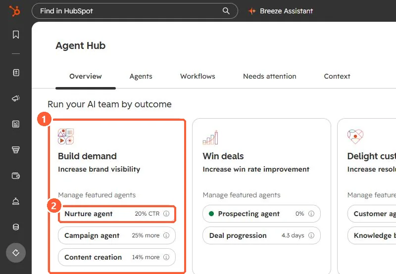

Short answer
Nurture agent uses CRM data and web research to rewrite the subject line, preview text, CTA text and body of an automated email for a percentage of recipients. HubSpot's KB says credits are consumed each time it personalizes one email for one contact. To control the cost, set an account credit limit, a nurture agent limit, a lower personalized percentage per email, or turn it off for specific emails. It needs Marketing Hub Professional or Enterprise.
1. Where it shows up
In my demo portal, Agent Hub lists nurture agent under Build demand. The per-email settings live in the automated email itself.


2. Do the maths first
Because the charge is per personalized email per contact, a workflow email sent to a large segment multiplies quickly. Estimate monthly sends for each automated email, multiply by the personalized percentage, and compare that with your credit allocation on the HubSpot Credits page.
3. Permissions
- Marketing email Edit permission to view or change nurture agent on an email.
- Marketing email Publish permission to turn it on or off.